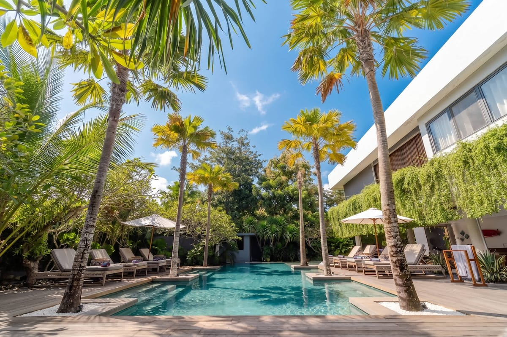
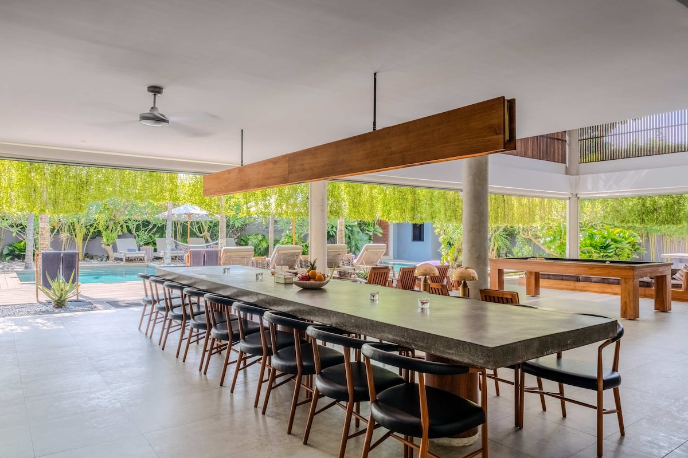
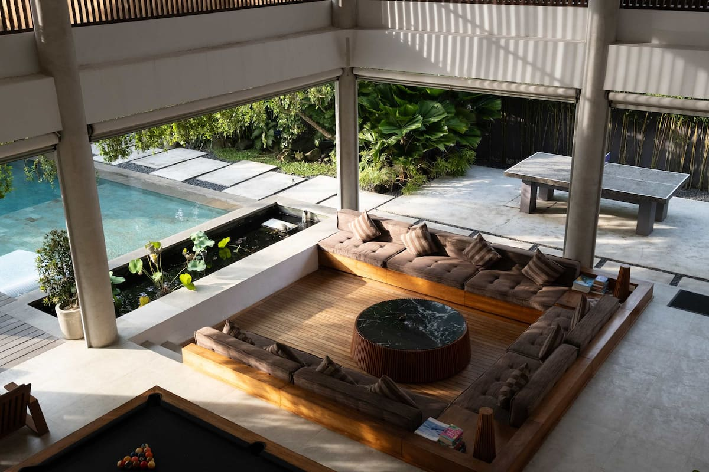
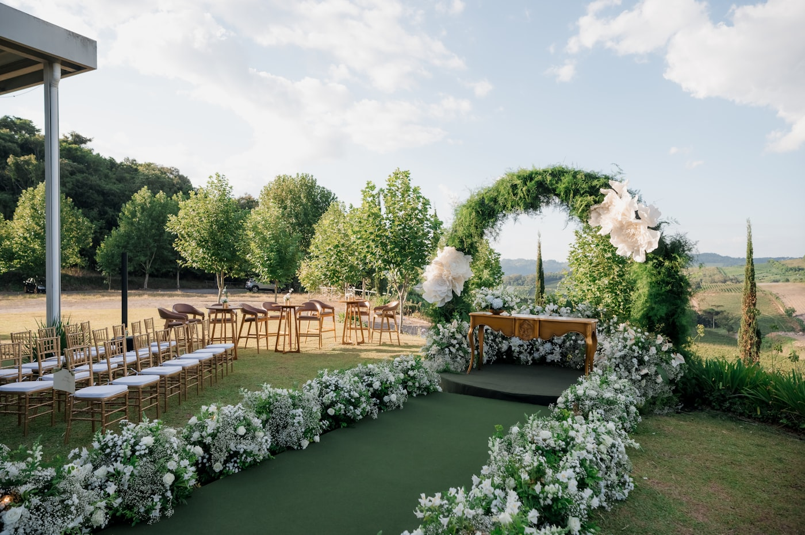
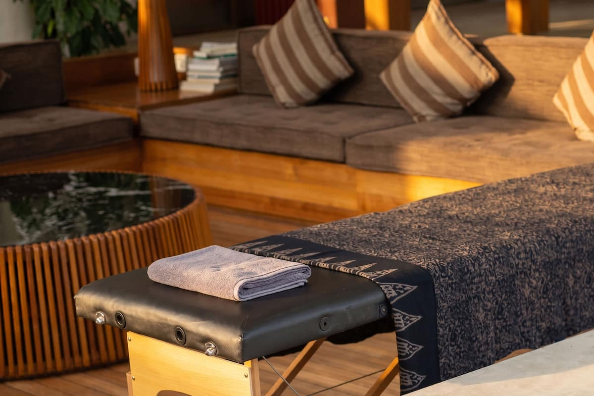
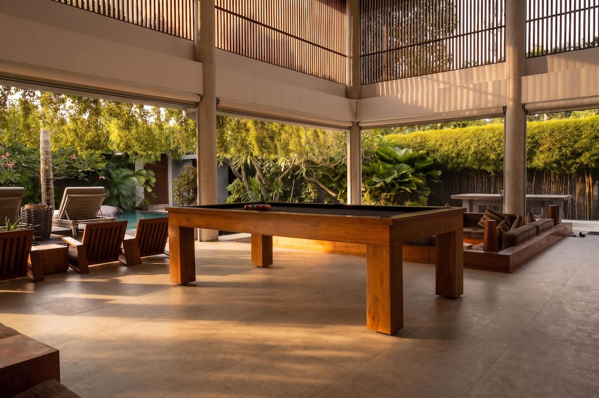

Ideal for family, close friends, and the wedding party. 2 extra beds on request.

Wedding Stays In Bingin
Intimate Bali Wedding Stays
A private 9-bedroom villa for wedding stays, intimate celebrations, welcome dinners, and event enquiries around the people closest to you.
9En-suite bedrooms
King/TwinBeds
9.5Bathrooms
4.91Guest rating
07-23Chef service
01 / 06 Why It Works
A Private Villa Made For Togetherness
Address Bali Villa suits wedding stays because the celebration can unfold across one private estate: en-suite bedrooms for family and close friends, indoor-outdoor spaces for gathering, a large pool for slow villa days, and a walkable Bingin setting close to beach stairs, cafes, restaurants, gyms, yoga studios, spas, and essentials.
The villa is best for intimate, pre-arranged occasions rather than loud parties or unapproved visitors. Wedding enquiries, additional guests, catering plans, styling, and outside vendors should be approved before arrival so the stay feels smooth for the hosts, guests, and villa team.
- Large private pool and garden-facing shared areas for relaxed celebration moments.
- Professional kitchen, long dining table, BBQ/grill setup, and two fridges.
- Indoor lounge, entertainment zones, outdoor cinema option, Sonos, pool table, ping pong, and games.
- Villa manager check-in, discreet onsite support, and concierge-arranged services.
02 / 06 Guest And Event Capacity
Room For The Inner Circle, With Clear Event Approvals
Every bedroom is en-suite, with air conditioning, smart TV, mini fridge, Nespresso machine, and key-card access.
Six California king suites plus three twin-to-king rooms give flexibility for couples, singles, and family members.
Invite your closest guests for the celebration, with visitor numbers, vendors, dining, and setup details coordinated with the villa before booking.

Welcome Drinks To Evening Lounge
Arrival toast | Shared dinner | Indoor-outdoor celebration
03 / 06 Hosting The Celebration
How The Wedding Day Unfolds
The villa works best as a refined private base: a welcome drink by the pool, an intimate ceremony moment by approval, a catered dinner around the long table, and a relaxed evening across the lounge, games area, and outdoor cinema setup.
For larger or more formal wedding events, use the villa as accommodation and a planning hub, then coordinate venue, transport, styling, and dining details through the concierge before arrival.
Arrival toast by the pool
Long dining table
Indoor lounge
Outdoor cinema option
Professional kitchen
Private suites
04 / 06 Setup Options And Past Examples
Ways To Shape The Wedding Stay
Use the villa for the full wedding week rhythm: arrival meals, getting ready, approved intimate moments, recovery days, and concierge-managed experiences around Bali.

Welcome Dinner
Arrival Meal For The Inner Circle
Start the stay with a chef-prepared dinner, BBQ-style meal, or catered table before the wedding day.

Getting Ready
Private Suites For A Calm Morning
Use the en-suite bedrooms and indoor spaces for family prep, styling, portraits, and quiet pauses.

Small Ceremony
Approved Villa-Based Moment
Coordinate any intimate ceremony, guest count, vendor access, and setup timing with the villa team first.

Recovery Day
Pool, Wellness And Island Plans
Add massages, yoga, surf, private drivers, day trips, or a slow pool day after the celebration.
05 / 06 Event Enquiries
Share The Guest Count, Dates, And Setup
The best wedding enquiries include the stay dates, overnight guest count, outside visitor count, ceremony or dinner plans, vendor needs, and any private chef, styling, transport, or wellness requests.
From there, the team can confirm what is possible at the villa, what needs approval, and which extras are best arranged before arrival.
06 / 06 Testimonials
4.91 Average guest rating from 64 reviewsGuest feedback repeatedly highlights the pool, hospitality, walkable Bingin location, and indoor spaces, which are the same ingredients that make the villa work well for wedding stays.
Large Shared Centerpiece
The pool is a natural gathering point for welcome drinks, relaxed afternoons, and the recovery day.
Hosted Support
Guests consistently respond to the villa team, service rhythm, and help arranging the details.
Walkable Bingin Base
The villa is close to the beach stairs and local cafes, restaurants, gyms, yoga, and spa options.
Room To Gather
Indoor lounges, dining space, entertainment zones, and private bedrooms keep the group comfortable.

Wedding Enquiry
Setup The Perfect Wedding
Send the villa team your dates, rooming needs, guest count, visitor plans, and the kind of celebration you want to create.